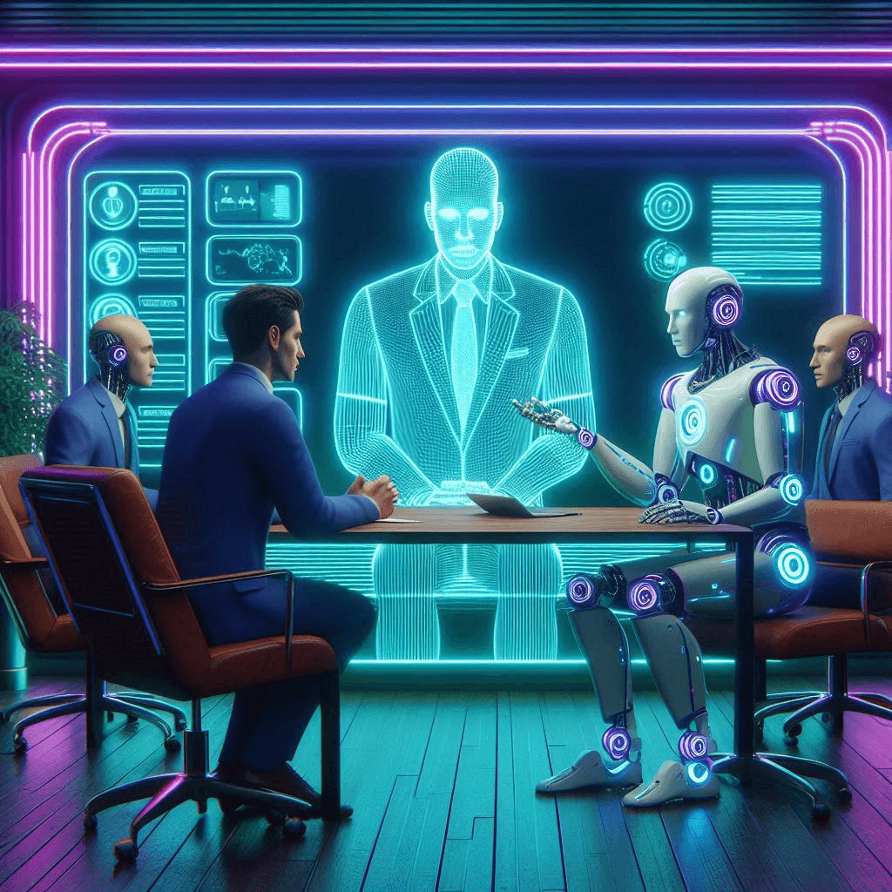

Working In A New Industry
By: Justin Stewart
10-16-2024
Home Page

Table of Contents
6 months ago
About six months ago, I began a new job—not a career—bringing with it a mix of positives and challenges worth mentioning. After spending eight years with my previous employer, I was unexpectedly asked to resign on a Tuesday morning. Fortunately, I managed to transition into a completely different industry, but the adjustment has been an interesting one.
On the bright side, the pay and hours are fair, and there are a few perks like free store-brand coffee and bottled water. While management isn't overtly hostile, there is a noticeable passive-aggressive tension that lingers in the background. Compared to my previous job, which was far more physically demanding with harsh working conditions, this position feels almost like getting paid to sit in a quiet library.
Enterprise grade
I currently work for a large enterprise, and there’s potential for me to transfer to a different department. However, I see this position as nothing more than a stepping stone—it's not where I envision my long-term future or the place where I’ll retire. For now, the job serves its purpose by providing me with stability and a paycheck while I work toward earning my associate's degree.
Over the next few years, I will be navigating the challenges of working under individuals who will be retired by the time I graduate from college. This generational gap, along with differing priorities, may be a significant factor behind the passive-aggressive hostility that seems to permeate management. Their reluctance to adapt or consider new perspectives often makes it difficult to foster a collaborative and progressive work environment.
This role allows me to focus on my education without too much disruption, but it's clear that my ambitions lie elsewhere. I’m determined to pursue a more fulfilling career path once I’ve completed my studies. While this job helps me get by, my sights are set on growth and new opportunities beyond this company’s walls. It’s all about positioning myself for the future, and right now, that means using this position as a stepping stone toward something greater.
While this job offers some stability for now, my focus remains on advancing my education and finding opportunities that align with my long-term goals.
The management
One of the most concerning aspects is the way management interacts with employees. The main manager has a habit of referring to us as "animals," which is not only disrespectful but also sets a troubling tone for the workplace. This creaes an atmosphere of distrust rather than teamwork.
Communication
Communication from management is severely lacking. Expectations are often unclear, and it seems they struggle to articulate what they want us to achieve. This lack of clarity is further complicated by a significant age gap—roughly 30 years—between management and myself, creating a disconnect that leaves the leadership structure feeling vague and disorganized.
Interactions with the manager are particularly frustrating, as communication is entirely one-sided. They are unwilling to consider alternative suggestions or input from the team, simply repeating the same unclear instructions without offering any real guidance. Ironically, they often remind us that "we are not a team," yet fail to see how their leadership style undermines any chance of building a cohesive, effective team. If the leadership was stronger and more open to collaboration, we would undoubtedly function at a much higher level.
Personal or Business?
While the supervisor was on vacation, the main manager made a surprising decision to relocate him from his office, setting up a cubicle directly behind my desk. Now, the supervisor spends his entire day sitting behind me, which has made the work environment feel more constrained and awkward. Not long after, the manager moved into the supervisor's former office without any explanation, leaving the whole situation feeling unsettled.
Just a few days later, things took an even stranger turn. The manager ordered the supervisor to clean the floor of his old office, despite it being unnecessary. This didn’t seem like a decision made with productivity or workflow improvement in mind—it felt more like a personal power move or even a vendetta against the supervisor. The whole chain of events created an uncomfortable dynamic, reinforcing the notion that decisions here aren’t always driven by logic or efficiency, but sometimes by personal grudges and office politics.
The situation leaves the team wondering what’s next, as leadership decisions seem increasingly arbitrary and disconnected from the real needs of the workplace.
Generational Gap
Management often operates under the assumption that everyone shares their thought processes and perspectives. However, there is a substantial age and educational gap between the management team and I. This disconnect can lead to misunderstandings and miscommunications, as their experiences and frameworks for decision-making differ significantly from mine. It would be beneficial for management to recognize this disparity and consider alternative viewpoints, fostering a more inclusive environment where everyone's ideas are valued. In conversations with the management they state that they value feedback, however in practice it is quite the opposite.
Internet Explorer backwards compatibility
In my role at this company, I rely on Internet Explorer—still in use on some enterprise-grade systems due to backwards compatibility—to access their legacy database. This reliance on outdated technology poses significant challenges, as the system is no longer aligned with modern standards. Navigating these limitations not only slows down our workflow but also hinders our ability to implement more efficient solutions. It’s frustrating to work with such an antiquated system in an era where technology is constantly evolving, and it highlights the need for a substantial upgrade to enhance our operations and productivity.
My main function is to process/store items when they are shipped to the facility or ship items requested by service technicians. Orders arrive at random intervals throughout the day, which makes it difficult to effectively plan my tasks. More often than not, I spend hours waiting behind the desk for an order to be placed, leading to significant downtime.
When it comes to shipping parts orders through our legacy database, the process is frustratingly slow; page reload times can vary dramatically, taking anywhere from 30 seconds to a staggering 10 minutes.
This inefficiency not only disrupts my workflow but also leaves me with plenty of time to ponder how we might improve our business processes. It would be incredibly valuable to explore potential solutions or enhancements that could streamline operations, as the current system hinders productivity and creates unnecessary delays. If management were open to suggestions, I could leverage my insights gained during these prolonged waiting periods to help drive meaningful improvements in our workflow.
However, improvements to the workflow will mean less time spent physically moving, which the management interprets as being non productive. Management is unable to offer a clear direction for the future.
Final Thoughts
Unfortunately, it seems unlikely that I will find a better-paying job without a college degree, which leaves me feeling somewhat trapped in my current position. As I navigate the challenges of this role, I often find myself wondering about my future here. Will management recognize my efforts and contributions, or will they decide to replace me with someone else?
This uncertainty adds an extra layer of stress to my workday, as I’m constantly reminded that my career progression is limited without further education. While I’m eager to grow and develop my programming skills, I often feel held back by my current situation. Having a clear path for advancement or access to professional development opportunities in software engineering would be reassuring and could open doors for a more promising future. In a few years, I will shift from working a job to building a meaningful career.